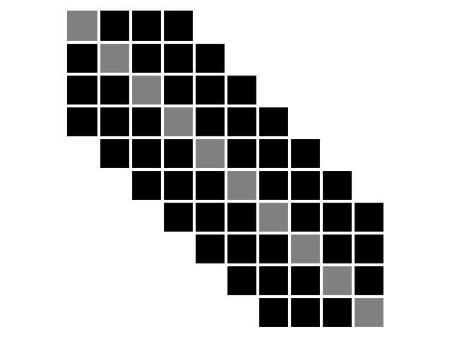
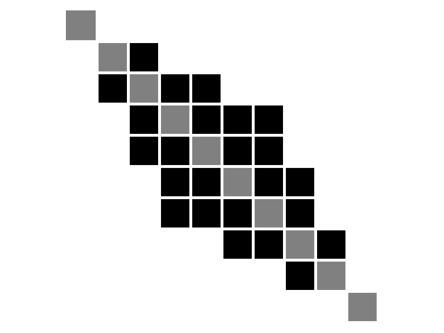

In the following, we present two similarity measures that are discussed in more details in Sections XX and YY.
Dynamic Time Warping
Dynamic Time Warping (DTW) (Sakoe & Chiba, 1978) is a similarity measure between time series. Let us consider two time series $x = (x_0, \dots, x_{n-1})$ and $y = (y_0, \dots, y_{m-1})$ of respective lengths $n$ and $m$. Here, all elements $x_i$ and $y_j$ are assumed to lie in the same $d$-dimensional space.
Note. In tslearn, such time series would be represented as arrays of
respective
shapes (n, d) and (m, d) and DTW can be computed using the following code:
from tslearn.metrics import dtw, dtw_path
dtw_score = dtw(x, y)
# Or, if the path is also
# an important information:
path, score = dtw_path(x, y)
where $\pi = [\pi_0, \dots , \pi_{K-1}]$ is a path that satisfies the following properties:
- it is a list of index pairs $\pi_k = (i_k, j_k)$ with $0 \leq i_k < n$ and $0 \leq j_k < m$
- $\pi_0 = (0, 0)$ and $\pi_{K-1} = (n - 1, m - 1)$
for all $k > 0$ , $\pi_k = (i_k, j_k)$ is related to $\pi_{k-1} = (i_{k-1}, j_{k-1})$ as follows:
- $i_{k-1} \leq i_k \leq i_{k-1} + 1$
- $j_{k-1} \leq j_k \leq j_{k-1} + 1$
Here, a path can be seen as a temporal alignment of time series such that Euclidean distance between aligned (ie. resampled) time series is minimal.
The following image exhibits the DTW path (in white) for a given pair of time series, on top of the cross-similarity matrix that stores $d(x_i, y_j)$ values.
Note. Code to produce such visualization is available in tslearn's
Gallery of
examples.
def dtw(x, y):
for i in range(n):
for j in range(m):
dist = d(x[i], y[j]) ** 2
if i == 0 and j == 0:
C[i, j] = dist
else:
C[i, j] = dist + min(C[i-1, j] if i > 0
else inf,
C[i, j-1] if j > 0
else inf,
C[i-1, j-1] if (i > 0 and j > 0)
else inf)
return sqrt(C[n, m])
Properties
Dynamic Time Warping holds the following properties:
- $\forall x, y, DTW(x, y) \geq 0$
- $\forall x, DTW(x, x) = 0$
However, mathematically speaking, DTW is not a valid distance since it does not satisfy the triangular inequality.
Setting additional constraints
The set of temporal deformations to which DTW is invariant can be reduced by setting additional constraints on the set of acceptable paths. These constraints typically consist in forcing paths to lie close to the diagonal.
First, the Sakoe-Chiba band is parametrized by a radius $r$ (number of off-diagonal elements to consider, also called warping window size sometimes), as illustrated below:
Note. The corresponding code in tslearn would be:
from tslearn.metrics import dtw
cost = dtw(
x, y,
global_constraint="sakoe_chiba",
sakoe_chiba_radius=3
)

Second, the Itakura parallelogram sets a maximum slope $s$ for alignment paths, which leads to a parallelogram-shaped constraint:
Note. The corresponding code in tslearn would be:
from tslearn.metrics import dtw
cost = dtw(
x, y,
global_constraint="itakura",
itakura_max_slope=2.
)

Optimal Transport
TODO: Wasserstein and Gromov-Wasserstein
References
- Sakoe, H., & Chiba, S. (1978). Dynamic programming algorithm optimization for spoken word recognition. IEEE Transactions on Acoustics, Speech and Signal Processing, 26(1), 43–49.